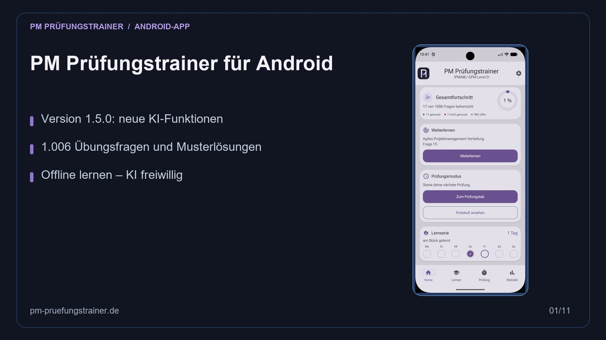
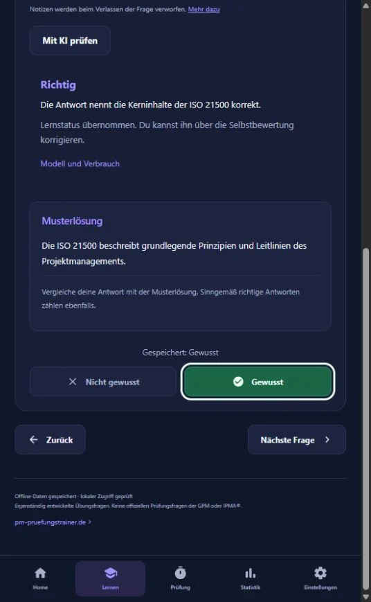
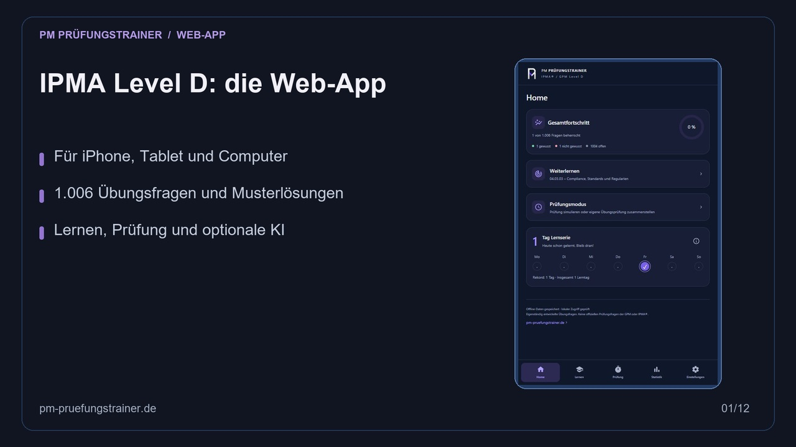

Android-App: KI und Prüfung
Neue Funktionen verständlich erklärt · 2:59 Minuten
Video auf YouTube ansehen ↗FREIWILLIGE ERGÄNZUNG ZUM LERNEN
Die KI vergleicht deine Antwort mit der Frage und Musterlösung. Du bekommst Feedback und kannst den übernommenen Lernstatus korrigieren.
Ohne KI bleiben Musterlösungen und Selbstbewertung vollständig nutzbar.

SO FUNKTIONIERT ES
In einer Prüfung beantwortest du die Fragen ohne Unterbrechung durch KI. Erst nach der Abgabe startet die Auswertung; die Prüfungszeit läuft nicht weiter. Leere Antworten werden nicht an die KI geschickt. Bei einer Störung oder fehlendem Guthaben bleiben bereits bewertete Antworten erhalten, den Rest kannst du manuell bewerten.
KOSTEN UND GRENZEN
KI-Guthaben ist nicht im App-Preis enthalten. Kostenpflichtige Modelle nutzen dein eigenes OpenRouter-Guthaben. Die Mindestaufladung beträgt derzeit 5 USD Guthaben; Gebühren und gegebenenfalls Steuern kommen hinzu. Den endgültigen Zahlbetrag zeigt OpenRouter an. Ein ChatGPT-Abo wird damit nicht verrechnet.
Kostenlose Modelle sind eine begrenzte Alternative. Verfügbarkeit und Limits legt OpenRouter fest. Ein Modellwechsel setzt ein gemeinsames Gratis-Tageslimit nicht zurück.
Mit Google Gemini 2.5 Flash Lite ergeben unsere Web-App-Tests folgende Hochrechnung: Mit 5 USD Guthaben kannst du ungefähr 60.000 Antworten auf einzelne Fragen prüfen lassen. Das entspricht rechnerisch rund 60 vollständigen Durchgängen durch unseren Katalog mit 1.006 Fragen. Alternativ reicht dasselbe Guthaben in unserer Hochrechnung für ungefähr 900 Gesamtprüfungen mit jeweils 115 Fragen, davon 91 offene Antworten. Die beiden Angaben sind Alternativen und lassen sich nicht addieren. Prüfungsantworten werden in Paketen bewertet und sind pro Antwort günstiger. Grundlage: 55 Einzelbewertungen und Prüfungsdurchläufe mit jeweils 91 offenen Antworten vom 27.11.2026, mit 10 % Kostenpuffer gerechnet und abgerundet. Keine garantierte Reichweite und keine separate Android-Kostenmessung: Textlänge, Modell, Preise, Fehlversuche und Zwischenspeicherung beeinflussen die Kosten.
Das Verbindungslimit ist nicht dein Guthaben. Es begrenzt die Ausgaben über diese App-Verbindung und kann bei OpenRouter angepasst werden. Es kann erreicht sein, obwohl dein Konto noch Guthaben hat.
Du kannst die noch offenen Antworten selbst bewerten. Ein technischer Fehler wird nicht als falsche Antwort gewertet. Ob du Guthaben auflädst oder später erneut prüfst, entscheidest du selbst.
Stand: 27.11.2026 · Aktuelle OpenRouter-Bedingungen
DEINE DATEN
Nur die zu prüfende Frage, ihre Musterlösung, das Kompetenzelement und deine Antwort werden an OpenRouter und den Modellanbieter gesendet. Kein vollständiger Fragenkatalog und kein kompletter Lernverlauf. Bitte keine persönlichen oder vertraulichen Angaben eingeben.
Die Verbindung wird auf dem jeweiligen Gerät beziehungsweise Browser verschlüsselt gespeichert und nicht mit dem Lernstand exportiert. Auf einem neuen Gerät verbindest du dein Konto erneut. KI benötigt Internet und kann sich irren. Das Ergebnis ist keine offizielle Prüfungsbewertung und keine Bestehensgarantie.
DatenschutzhinweiseSCHRITT FÜR SCHRITT
OpenRouter verbinden, Antworten prüfen und Prüfungen nach der Abgabe auswerten. Ohne KI bleiben beide Apps vollständig nutzbar.

Neue Funktionen verständlich erklärt · 2:59 Minuten
Video auf YouTube ansehen ↗
Neue Funktionen verständlich erklärt · 3:11 Minuten
Video auf YouTube ansehen ↗Die Videos öffnen auf YouTube. Erst beim Aufruf wechselst du zum externen Anbieter.